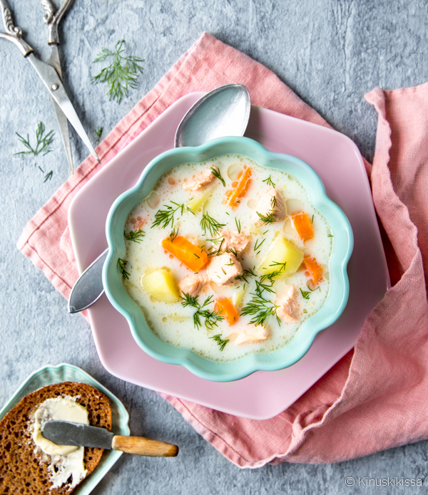

Traditional Finnish Salmon Soup

Traditional Finnish Salmonsoup
Salmon soup is full of taste and full of healty things, like good fats and vitamins.
It is simple to make, and perfect food for cold weather.
Ingredients
- About 6dl of water
- About 2-4 big potatoes
- Vegetables to taste (300g)
-
Carrots
-
Swedes
-
Celery
-
Parsnip
-
Leek
-
Parsley
-
Couple Allspice
-
About 500g of salmon
-
Heavy cream
-
Salt and some fresh dill
Steps
- Peel and dice the potatoes and other veggies, boil them with allspice.
- As the potatoes cook, prepeare the fish. Remove carefully the bones and skin the fish
- Dice the fillet to bite sized cubes
- Add the fish with the cooked potatoes, let it boil about 5 mins.
- Add the heavy cream and and add salt to the taste
- Serve with ryebread and enjoy